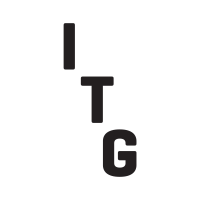

Investment Technology Group
2015 - Present
Vice President, Manager, Client Application Support
- Oversee the system operations for all of the firms backend technology
- Develop talent and skills within the teams.
- Establish best practice for implementation and support.
- Establish direction and goals for teams
- Perform on the fly and end of day configurations changes (XML).
2013 - 2015
Vice President, SMART Order Routing
- Principal system engineer responsible for deployment, release management, monitoring, and troubleshooting of ITG's Smart Router™ systems.
- Troubleshooting equity trading systems, quote feeds, order routing and execution application issues.
- Develop scripts (Bash/Batch) to automate tasks, alert for issues and produce various reports through SQL.
- Perform morning and evening system health checks and UAT for new production application releases.
- Perform on the fly and end of day configurations changes (XML).
- Monitor incoming data sources, order and execution flow within the system and work with other support areas to resolve issues.
- Liaise regularly with the trading desk and ensure awareness of system issues.
- Interact regularly with members of product management and development teams to produce software solutions that address operational needs and requirements.
May 2012 - 2013
Vice President, Manager, Global Client OnBoarding
- Lead a team which is responsible for managing the key initiatives of the entire Global Client Services team.
- Develop global workflows and processes within the organization to create greater communication and streamline tasks for greater efficiency.
- Manage all the incoming requests and ensure projects are fairly distributed among project managers and ensure projects are planned and executed properly.
- Developed a SharePoint site to consolidate all Global requests to a single source to act as a project management tool and provide transparency to the firm through detailed reporting functionality.
- Oversee the coordination all the Global components of implementation and rollout of Trading Products to clients.
- Responsible for training all team members on products, process, and workflows within the Global Organization.
- Manage a remote team in Bangalore India which performs UAT on Trading Products.
2008 - 2012
Assistant Vice President/Team Lead/Principal Systems Analyst, Client Server Support
- Provide high-level support for all Production Trading Systems, including implementation, upgrades, and resolving production related issues
- Primary resource for managing a 325+ server farm, including capacity planning, resource management, and purchasing. Introduced a cost saving initiative to reduce cost through Virtualization, Algorithm/Client utilization analysis, and retirement of “end of life” hardware.
- Provide Level I Support for the Firms’s Market Data and Reuters Quote Distribution infrastructure, including exchange entitlements. Developed a database solution (SQL) to determine client inactivity, resulting in significant reduction in Market Data Costs.
- Establish best practice for support of products and create documentation to be distributed among colleagues and international counterparts.
- Provide Project Management for long term Global initiatives run within the group.
- Responsible for proprietary log monitoring software and configuring automated alerting.
- Develop scripts to enhance and automate support functions in the environment.
- Responsible for documenting and training staff, domestic and abroad on new technologies and products.